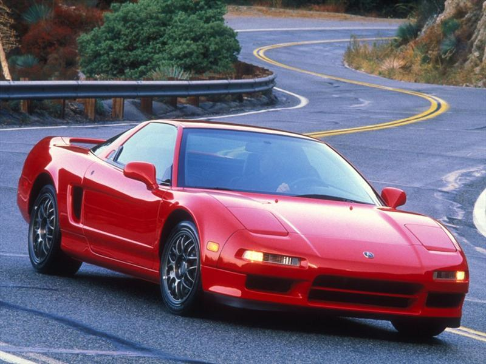
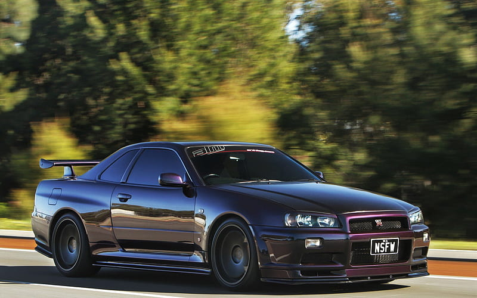
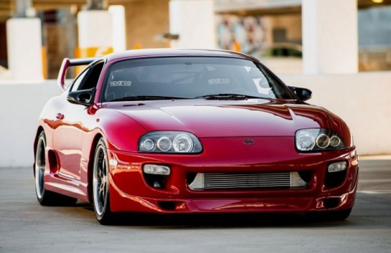

¿QUÉ ES JDM?
El concepto que da al estilo JDM, Japanese Domestic Market (mercado interno japonés) es el término utilizado por las empresas en Japón para referirse al mercado de bienes locales y servicios nacionales, en comparación con el mercado internacional. Dentro del mundo de la importación del automóvil, el término se refiere a los automóviles japoneses de la misma marca y piezas diseñadas y fabricadas para ajustarse a los vehículos japoneses y regulaciones de equipamiento, según las necesidades niponas. Estos son importados a terceros países a través del comercio ordinario, el mercado gris.
A partir de los años 90, los fabricantes de los coches japoneses lucharon intensamente con el propósito de producir los mejores automóviles de gasolina del mercado de esa generación. Esto produjo que las especificaciones de los JDM en japón causaran furor en otros países e hicieran apetecible su importación. Los tuners y entusiastas del mundo del motor se dieron cuenta rápidamente de esto y se comenzaron a importar piezas especificas de Japón para tener unas especificaciones equivalentes a los coches del mercado Japonés. Este fue el comienzo de la revolución JDM. Se empiezan a ver mejoras de rendimiento con los componentes de JDM-Spec, los típicos bodykits salvajes tuning empezaron a ser reemplazados por bodykits de fabrica sutiles y acercándose mas a un estilo racing con el fin de obtener el máximo rendimiento de su vehículo. Ver mas
HONDA NSX

Conocido como el Ferrari japonés, presumía una puesta a punto que contó con la colaboración del mítico piloto brasilero Ayrton Senna. Fue lanzado en 1990 y contaba con un innovador y ligero chasis monocasco de aluminio (su peso era de 1,350 kg). Ver mas
NISSAN SKYLINE GT-R R34

Si consideramos que durante esta época convivieron los R32, R33 y R34 sería injusto solo volcarse a un solo modelo. Como sea, es en esta década en la que este bestial automóvil gana el sobrenombre de Godzilla. El R32, era un tracción trasera, pero a partir del R33 añade un sofisticado sistema de tracción integral. Ver mas
SUPRA MK4

Aunque el Supra es un auto que data desde 1978. Es el Mk4, lanzado en 1993, el modelo más emblemático, siendo la estrella de la primera entrega de Fast and the Furious. Más allá de su atractiva carrocería tipo targa, este auto encontraba en el robusto seis cilindros en línea twin turbo 2JZ-GTE de 3.0 litros (capaz de entregar 320 Hp). Ver mas